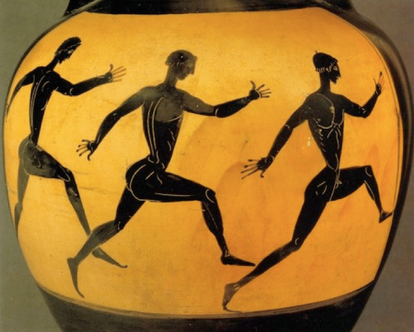

My Workouts

17th of December, 2020
Since the 8th grade, I have been a runner. For most of my life since then, I have practiced a habit of running. Disregarding the first few weeks of the COVID-19 lockdown (my mother was generally apprehensive about me going outside), poor air quality (there were local fires), and my recent RSI experience, I have ran consistently.
Before and after my runs, I would do some pushups, tricep dips, and planks, yet I was not really that in to them. Now, however, I have set upon a regimen of calisthenics.
This is the set of exercises that I do a minimum of four times per day:
- 25 Pushups [10 wide-armed, 10 regular, 5 diamond]
- 25 Tricep Dips [10 wide-armed, 10 regular, 5 diamond]
- 25 Crunches
- 25 Squats
- 1 Minute of Planks
I usually do one set, within the first few hours of my waking up in the morning, followed by another set in the afternoon. Then, I do one set before my run, and another set comes after.
My running workout consists of the following:
- Dynamic Stretches
- 2.5-5 Miles of Running
- 1 Minute of Cool-Down
- 3 Sets of 0.15-mile Sprints
- Static Stretches
A cold shower comes after, in order to harden my body and mind.
by Cortez Phenix
Blog Mainpage
Return to Homepage